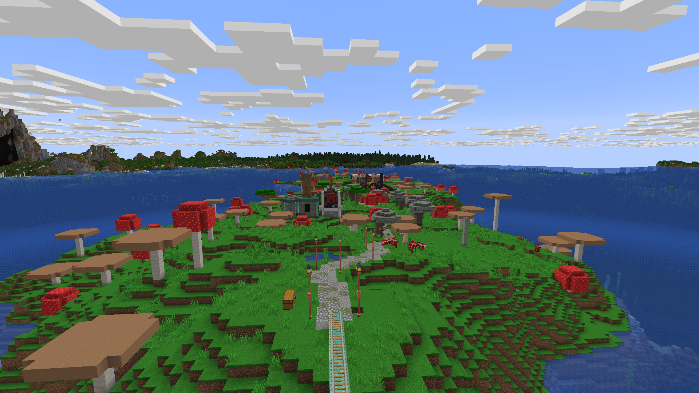
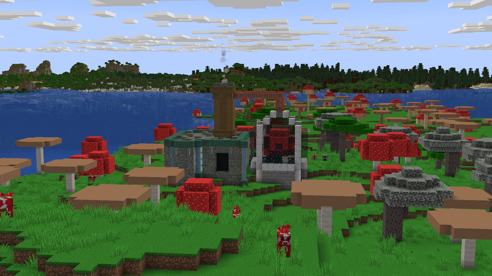

Started: 30th October 2025
Mooshroom island is nice but whats nicer is turning it into a green island and then living on it. The added bonus is no mobs spawn on the island so you don't have to light up the island.



Got bored halfway through as this is a massive task. I ended up putting a flowing river with a pond as the source.
test